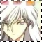
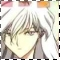

M I R R O R I M A G E : R E S E M B L A N C E
Who does Sasame look like? Is it a coincidence or a conspiracy? XD Let's take a look...
 *thonk* Yue from CardCaptor Sakura was the first character I thought of when I saw Sasame. They both have white hair, and they're both very serious and dedicated to their duties. They both wear white and jeez, is there anything that's different from them by their looks? Ok, Yue has longer hair. XD But the resemblance is only skin deep. When it comes to personality, the two are pretty far apart. For personality, Yukito fits the description much more effectively. Sasame does look a lot like Yukito as well. Same hair length, almost same hair color, and their facial expressions match a lot. Yukito's personality is much like Sasame's as well. They're both gentle and sweet and very caring. They both wear glasses and they both have a close/best friend. XD (Yukito & Touya, Sasame & Hayate) Is this just a coincidence or something else...? :P The resemblance is uncanny. *_*
*thonk* Yue from CardCaptor Sakura was the first character I thought of when I saw Sasame. They both have white hair, and they're both very serious and dedicated to their duties. They both wear white and jeez, is there anything that's different from them by their looks? Ok, Yue has longer hair. XD But the resemblance is only skin deep. When it comes to personality, the two are pretty far apart. For personality, Yukito fits the description much more effectively. Sasame does look a lot like Yukito as well. Same hair length, almost same hair color, and their facial expressions match a lot. Yukito's personality is much like Sasame's as well. They're both gentle and sweet and very caring. They both wear glasses and they both have a close/best friend. XD (Yukito & Touya, Sasame & Hayate) Is this just a coincidence or something else...? :P The resemblance is uncanny. *_*
-----------------------------------------
Broken Echo is an AinoyumeNET production. Pretear was created by Kaori Naruse and Junichi Sato, © 2001. All rights reserved.
Who does Sasame look like? Is it a coincidence or a conspiracy? XD Let's take a look...

*thonk* Yue from CardCaptor Sakura was the first character I thought of when I saw Sasame. They both have white hair, and they're both very serious and dedicated to their duties. They both wear white and jeez, is there anything that's different from them by their looks? Ok, Yue has longer hair. XD But the resemblance is only skin deep. When it comes to personality, the two are pretty far apart. For personality, Yukito fits the description much more effectively. Sasame does look a lot like Yukito as well. Same hair length, almost same hair color, and their facial expressions match a lot. Yukito's personality is much like Sasame's as well. They're both gentle and sweet and very caring. They both wear glasses and they both have a close/best friend. XD (Yukito & Touya, Sasame & Hayate) Is this just a coincidence or something else...? :P The resemblance is uncanny. *_*
Broken Echo is an AinoyumeNET production. Pretear was created by Kaori Naruse and Junichi Sato, © 2001. All rights reserved.